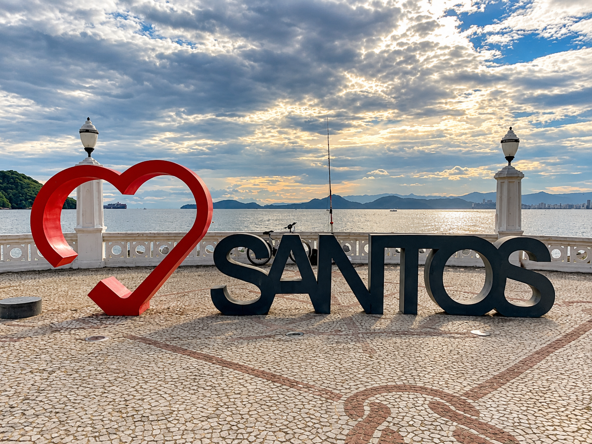

Larimar Prime Imóveis Santos, SP
Seu próximo capítulo começa aqui.
Compra, venda e locação de imóveis em Santos, com atendimento personalizado.
Larimar Prime Imóveis
Quem está à frente da Larimar
Atendimento personalizado e exclusivo para acompanhar você em cada etapa da sua jornada imobiliária.
Uma seleção para inspirar
Espaços para novos começos
Carregando imóveis...

Santos, SPUm lugar para chamar de seu
A vida encontra seu ritmo à beira-mar.
Uma cidade de encontros entre mar, arquitetura e vida cotidiana. Encontre um espaço que acompanhe o seu próximo capítulo em Santos.
Atendimento personalizado e exclusivo